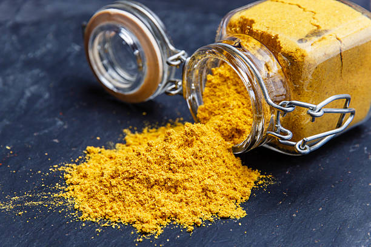

Mild Curry Powder

|
|
Ingredients
- 2 tablespoons ground cumin
- 2 tablespoons ground coriander
- 2 teaspoons ground turmeric
- ½ teaspoon crushed red pepper flakes
- ½ teaspoon mustard seed
- ½ teaspoon ground ginger
|
Description
A fragrant yellow curry powder to use in soups, sauces, rice, and anything else you can think of!
Steps
- In a blender or food processor, combine cumin, coriander, turmeric, red pepper flakes, mustard seed, and ginger. Process to a fine powder. Store in an airtight container.
- That's it!